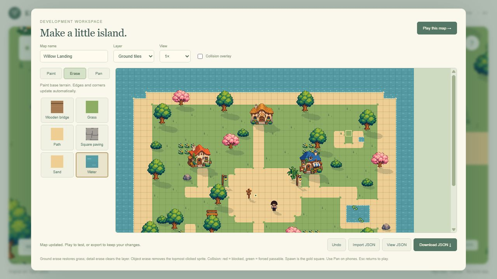

[inst]Whatis…
TRANSFORMER × 4
nexttoken?
DATA → TRAINING → GENERATIONScratch-AI ↗
A language model trained from scratch. An exploration of the distance between readable text and useful answers.
INDEPENDENT EXPLORATION · AI / SOFTWARE / HARDWARE
I explore how language models, interactive software, and electronics work—by turning curiosity into experiments, testing the results, and learning from what breaks.
Explore my work ↘A working question is worth exploring.
A failed experiment is worth understanding.
01 / SELECTED WORK
Explore a direction, or see how the different pieces connect.
A language model trained from scratch. An exploration of the distance between readable text and useful answers.

ACTUAL PROJECT / MAP EDITORA browser puzzle adventure connecting Indonesian and Japanese cultural elements, supported by a tile map editor.
Create an island that visitors explore through music and language puzzles.
The project history documents terrain painting, automatic edge and corner selection, sprite states, and map import/export. These tools help turn a game idea into an editable world.
Interest in interaction, cultural storytelling, and the systems behind a visual experience. The project was developed with coding-agent assistance.
A custom security-key PCB project exploring component placement, routing, and the practical constraints of a compact board.
Make a compact board easier to route by reconsidering component placement and connections.
The project history documents revisions around the controller, flash, clock, and power components, plus a routing trial and an automated routing workflow developed with coding-agent assistance.
This is presented as a PCB design project. Physical operation and security performance have not been verified for this portfolio.
Showing 3 projects
02 / A CLOSER LOOK
Scratch-AI began with a simple ambition: understand language models by building and training one from scratch.
Paused experimentConfiguration in the original training script.
I independently developed the initial version, covering tokenization, training, checkpoint saving, and interactive generation. The source includes a simple next-word predictor and a Transformer model using PyTorch.
Saved outputs contain recognizable English, but don't reliably answer the input. The inspector displays candidate next-token scores, giving me another way to examine the model's behavior.
Prompt good morning
Generated output good morning to lots of things for example. we had a big- snake in the blue light with sky, like blue and shake lots of space bands that were threatening to lead after all sorts of strange bce. this idea is because she has been a mother bond door.
Saved output showing readable English with incoherent meaning.I later used an AI coding agent to help improve the project. The later documentation records dataset preparation, checkpoint recovery, and investigation of unstable training. Those improvements belong to the assisted phase.
THE TAKEAWAY
The next priorities are repeatable evaluation, saved loss history, and stable training before scaling further.
03 / ON THE WORKBENCH
Early ideas and learning directions, with room to grow.
Exploring image normalization, tensor shapes, cropping, and binary masks. A foundation for future experiments.
Exploring how wrist motion could control a cursor, media playback, and custom shortcuts.
A proposal for helping students report, find, and reclaim lost belongings through a shared digital service.
04 / THE PERSON BEHIND THE PROJECTS
HELLO, I'M
RPL student exploring machine learning, software, and electronics.
Get in touch ↗I enjoy exploring the connections between AI, software, and electronics. My projects are a record of what I've tried, what I've learned, and what I'm working to understand next.
I build independently and use AI assistance where it helps me move a project forward. I aim to make my contribution, the results, and the remaining limitations clear.
Find a project that interests you ↗